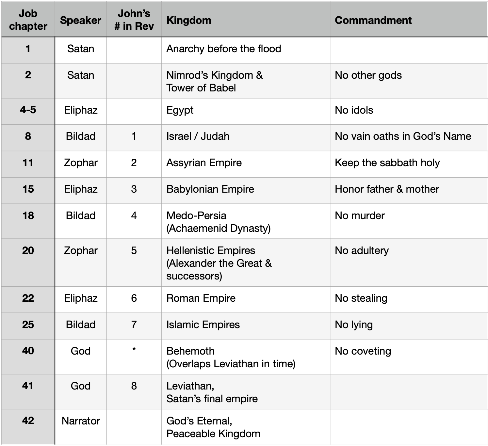

Job: The Course of Empires
Published on 2024-07-02
This article was originally published as the chapter "Job: The Course of Empires" in Plague, Precept, Prophet, Peace.
It shows how many of the speeches in Job include details that match that section of Job to a different world empire. This is a call for God to judge those empires, often symbolically called beasts. The only speakers whose words do not invoke wrath against a specific beastly empire are Job and Elihu.
While this article identifies each empire, it remains for the next article to specify the charges against them:
The Meaning of the Beasts of Job
Call to me and I will answer you,
and will tell you great and hidden things
that you have not known.
- Jeremiah 33:3
Earlier we saw how Ecclesiastes 1 lists types of prophetic clocks. One was the Empire clock, which lists empires in a qualitative sequence without giving details about the duration of each. Daniel has several examples of these, the longest of which lists five empires, four human and one divine. Revelation 17 has what I once considered the most complete list, with seven main empires followed by a shorter-lived eighth (Leviathan, the beast from the sea). In addition, Leviathan had companions: Behemoth (the beast from the land) and ten vassal kingdoms (Revelation 17:12).
Then while researching for this essay, I found a longer Empire Clock in Job. It has thirteen kingdoms, eleven of them beasts, one an anti-kingdom, and God’s eternal one. The scheme builds on ideas introduced in Peace, like Solomon Never Knew. Each speech in Job corresponds to an era of history and the large scale character of the time springs from the personal character of the speaker.
Good speaker = good time.
Bad speaker = evil time.
(Note: Peace, like Solomon Never Knew introduced the idea of a speaker clock. Each speech in Job corresponds to an era of history and the large scale character of the time springs from the personal character of the speaker. Thus dark times in history correspond to speeches by Satan, Eliphaz, Bildad and Zophar, as well as God’s words about Behemoth and Leviathan. This was described in four consecutive chapters about Job, starting with “Dialogue with History: Job 1-19”.)
Peace, like Solomon Never Knew explained how each chapter of Job corresponds to a 119-year generation of history (120 years with one year of overlap), excepting the first two (for Adam and Methuselah, who lived much longer) and the last generation (which may be cut short by Jesus’ return, or extended if the Lord permits mankind to reverse the aging process through science). Those chapters contain prophecies concerning events that were to take place in their corresponding eras. If you compare that precise chronological scale to the non- chronological scale of this empire clock, not everything lines up. This is because the chapters in the Generational Clock mostly span identical numbers of years, whereas each empire lasted a different length of time. As I learned with Ecclesiastes, many Bible books concern multiple, overlapping structures, hence multiple, independent clocks. Any given verse may pertain to one clock, a second, or both. Thus it is that Job contains both a Generational Clock and an Empire Clock. Each negative section, namely Satan’s plotting, the friends’ eight speeches, and God’s accounts of Behemoth and Leviathan, speak of a different empire.
(Note: In Peace, like Solomon Never Knew, Job’s Generational Clock is described in these chapters:
- “Dialogue with History: Job 1-19”
- CSI Babylon: Job 20
- “The Second Half: Job 21-37”
- “Father Time: Job 38-42”.
The second of those chapters is devoted to a prophecy about Alexander the Great from Job 20.)
What has this to do with the plagues and precepts of Exodus? Because the pattern in Job addresses all thirteen empires, we can trust that that pattern is there and use Job’s Empire Clock to learn the characteristics of one of the twelve, the tenth (which comes seventh if you use John’s numbering from Revelation). Then we can later see how the combination of the third plague, third commandment (against taking the Lord’s name in vain), and events in history match. Analysis shows that Job has the most complete scaffolding for incorporating and arranging Biblical prophecy while Ecclesiastes has the best described and most refined framework. Only by assembling all the evidence can a fuzzy picture come into focus.
The Empires
The rest of this section will list the thirteen empires, match them to a section in Job, and then show how verses from those chapters say something about that empire.
The connection between speaker and beast in Job appears to be unique. Many Bible prophecies name nations directly. Many other prophecies use coded language to refer to nations. Such codes often make analogy to animals or metals, like in Daniel or Revelation. Nevertheless, the prophet makes it clear that some human empire is indicated, not another thing entirely. In Job, we are not even told that many chapters concern empires. This extra level of indirection hid the message well. If later prophets had not identified Rahab, Behemoth and Leviathan as empires, we would not know this.
Whenever a prophet lists things, the number of items on their list is likely significant. Daniel 2 listed four human empires and one divine one. The first in his list was Babylon, because that was the kingdom in charge when Nebuchadnezzar received the dream. The fourth kingdom is the one shattered by the heavenly mountain, Rome. The faith of the church would shatter Rome and wrest control of it from Satan. The number four has to do with the four seasons of the year, signifying a complete cycle of time, and the four directions of the compass, signifying universal geographic scope. The number five signifies grace, so the fifth kingdom was the grace of God, foundation of His kingdom of grace.
The Apostle John, however, was shown seven long-lived, human kingdoms, two demonic kingdoms (Behemoth and Leviathan), and then the Lamb’s conquest to fully establish God’s eternal kingdom. In this we see the numbers 1, 2, 3, 7 and 10. One is God’s kingdom. Two is Satan’s two kingdoms. Seven is mankind’s seven kingdoms which held Jerusalem at one point in history, representing divine completeness. Three is the division of the kingdoms into those three categories. Ten is the total number of kingdoms, a number representing human completeness.

Thus we can ask, “Why thirteen kingdoms here in Job?” If you exclude the heavenly kingdom, you have twelve human kingdoms, another measure of completeness. Or you can exclude the state of anarchy and include the heavenly kingdom, for a different twelve. In all these prophets, Job, Daniel, and John, the Holy Spirit wishes to convey that the number is complete and that when the final beast’s reign concludes, history will be over and peace will reign forever.
Having named the kingdoms in the table on the previous page, let’s study the evidence that the specified chapters really do have something to say about their respective kingdom. For some, the evidence is compelling. For others, my knowledge of history and Scripture is inadequate and the associations I propose are weaker.
One final introductory point must be made about the choice of kingdoms. Peace went into detail about what qualifies a kingdom to be a beast in John’s list. It was all about Jerusalem. The first seven of his beasts all conquered Jerusalem, with one exception: Assyria. Assyria did conquer all of the Northern Kingdom of Israel but merely extorted tribute from Judah, which held Jerusalem. This rule about Jerusalem was emphasized by the Bible scholar Ellis Skolfield in his 2014 Teaching Outline on Daniel & Revelation, Fish House Ministries, 2014.
Revelation focuses our attention on God’s heavenly altar, temple, and throne. Jerusalem is the analogous earthly copy of that altar, temple and throne. Based on this criteria, we can exclude Egypt, the Mongolian empire, Tamerlane, and many other conquerors that captured territory overlapping ancient Israel’s boundaries. We must also include Israel (or Judah), because through its disobedience it changed from a righteous kingdom into a beast no different from the rest.
In expanding the list of beasts via the Empire Clock in Job, we can add Egypt, because it held the Hebrew people as slaves prior to their conquest of Canaan. Job’s criteria are different. His clock goes back to the beginning of history, before there was a Jerusalem to capture. There were many empires before the rise of Egypt, but it seems that only one (Babel) deserved mention in God’s Word. Nevertheless, the founder of Babel, Nimrod, is thought by some researchers to be Sargon the Great, founder of the Akkadian Empire. That empire at its greatest extent reached the Mediterranean. If so, then Nimrod/Sargon’s empire likely included the future site of Jerusalem in its territory.
Anarchy
The first empire is no empire at all. The early chapters of Genesis say nothing of emperors, empires, or any sort of hierarchical organization of society. There is only murder, theft, sexual immorality, and sorcery. However, even though the law had not yet been given, it was prefigured. God will judge according to a ten-part schedule, law or no law. Partly this is because ten is the number of human completeness. (God helpfully gave us ten fingers so we would get it.) Thus the flood occurred at the tenth generation, Noah’s.
Most of the laws introduced by Moses have roots in events from this time before Babel.
- Have no other gods. Eve ate the fruit of the tree of the knowledge of good and evil partly because she believed the lie that it would make her like God.
- Do not worship idols. Satan appeared as a serpent. By obeying him, Adam and Eve were worshiping an idol, something “that is in the earth beneath”.
- Do not vainly call upon the Name of the Lord. In Genesis 4:26, men first begin to call upon the name of the Lord. We are not told of their motives.
- Keep the Sabbath. We are told that God rested on the seventh day. There is no evidence that anyone else did.
- Honor your father and mother. Following the flood, Ham mocks his father, Noah, for being drunk and naked, while his brothers honor their father by covering his nakedness. This ends in the curse of slavery, the opposite of the blessing God added to his commandment.
- Do not murder. Cain slew Abel and Lamech an unnamed man. Then God gave Noah the law about murder, instituting capital punishment.
- Do not commit adultery. Lamech had two wives.
- Do not steal. Taking the forbidden fruit was theft. Enslaving others is as well, as per 1 Timothy 1:10.
- Do not lie. The serpent lied. Then Adam blamed both Eve and God, by saying, “The woman whom you gave to be with me, she gave me fruit of the tree, and I ate.” (Genesis 3:12) That is the worst case of bearing false witness imaginable.
- Do not covet. This is the root of the problem. Eve coveted what was God’s (divinity) and Cain coveted what his brother Abel had (God’s favor).
This anarchy is reflected in Job 1. The Sabean and Chaldean raiders that stole Job’s cattle represent the lawlessness of humanity. The tornado and lightning strikes that killed Job’s children, sheep, and servants represent the lawlessness of nature. Despite all the evil committed by evil empires, the evil that springs from anarchy is worse. It is the exhibit that proves the necessity of government and justifies the establishment of the empires to follow.
Signal-to-noise Ratio. In signal processing, an important consideration is the signal- to-noise ratio. If the noise is too great, the signal becomes garbled. There are mathematical techniques for recovering the signal, to sharpen the contrast and eliminate the noise. The anarchy of the antediluvian world is the noise. The violations of the commandments listed earlier in this section are not in the order given in Exodus; they relate things primarily in chronological order. That is because I picked the most dramatic violations to report. However, people violated them multiple times, so for example we have two instances of murder plus one assessment of the violence of mankind (Genesis 6:11). Does the signal of God’s Ten Commandments hide inside the text and can we recover it? Yes and yes!
One mathematical problem is called finding the longest increasing subsequence. If each commandment is associated with a number from one to ten, each violation of a command can be considered a number and the early chapters of Genesis represented as a sequence of numbers. Can we skip over most numbers and be left with exactly ten violations of the commandments given in Exodus Twenty order? Not only can we do it, but we can do it twice.
Finding such an increasing sequence of Ten Commandments in random data would be possible, though unlikely. How about finding the commandments explicitly paired with their Exodus ordering number by virtue of sequences in the text? That would be impossible unless the ordering were intentional. Finding two such sequences is icing on the cake. What are the two ordering principles?
- Number of generations from Adam
- Chapter Number in Genesis
There are ten generations from Adam to Noah along the line of Seth. In addition we have records for eight generations from Adam to Lamech’s children along the line of Cain, plus a general statement about the wickedness of their descendants. These ten generations carry us to the flood. The first ten chapters of Genesis carry us further, to Nimrod and Babel. How can these sequences of ten be paired to the Ten Commandments? Let’s find out. Some of the correlations are positive (obeying the law), and some negative (breaking the law).
One. No other Gods before me.
First generation. By eating the fruit, Adam and Eve put themselves before God, hoping to become like him in knowledge and strength.
First chapter. God creates everything in the beginning, meaning there is literally nothing before Him.
Two. No idols.
Second generation (Cain’s line). Before he killed his brother, Cain’s grain sacrifice was rejected by God, whereas his brother Abel’s animal sacrifice was accepted. This points to a failure to worship God in the way that God determines, which is a form of idolatry. The first four commandments are all about worship:
- who (one true God),
- how (not as an idol we can control or with sacrifices of inferior value),
- why (for the sake of His Name and not our own reputation), and
- when (on the sabbath).
Second generation (Seth’s line). Seth’s name means appointed or anointed. To arrogate divine titles (as Alexander the Great and others would later do) is idolatry. Seth’s appointment was that his line would eventually produce the messiah. A true appointment is not idolatry or blasphemy, though Jesus’ detractors would charge him with such crimes.
Second chapter. Additional details of the creation are given in Genesis 2. Many things which would later become idols for people are described in their proper relation to mankind. Among these things are animals, rivers, gold and trees, including the Tree of the Knowledge of Good and Evil, as well as men and women.
Three. No misusing God’s Name.
Third generation (Cain’s line). Cain’s son and third in line was Enoch (but not the good Enoch who would be translated to heaven for walking closely with God). Enoch means “dedicated” and Cain dedicated the city that he built - the first city in the world - to his son. He magnified his name, not the Lord’s.
Third generation (Seth’s line). The time of the third generation is special, for Scripture says, “To Seth also a son was born, and he called his name Enosh. At that time people began to call upon the name of the Lord.” When these people began to call on God’s name, did they use His Name in reverent humility or misuse it for vain, selfish purposes? We don’t know. All we do know is that this is when people first began to use God’s name.
Third chapter. Adam was guilty in this chapter of misusing God’s name when to evade responsibility for eating the fruit he blames God for giving him Eve for his wife. But the worst thing was not using God’s name at all. He should have called upon God’s name for help when the serpent began to speak.
Four. Keep the Sabbath Holy.
Fourth generation (Cain’s line). Fourth from Adam via Cain was Irad, whose name means fleet, runner or fugitive, or possibly wild ass. The opposite of being at peace with God on the sabbath is being a fugitive. Just as Cain was expelled and made to wander the land of Nod, so his entire line was cursed with wandering.
Fourth generation (Seth’s line). On Seth’s side we have Kenan. The meaning of his name is uncertain. Some possibilities are found in the Abarim Bible dictionary . Related words in Hebrew mean create, acquire, purchase, possess, possession or dirge. As acquisition, it is used in Nehemiah 5:8 to speak of the redemption of slaves, adding meaning to a similar usage in Exodus 15:13. The whole basis of the sabbath peace to which the Jews were called was that they were redeemed from slavery. As dirge, it could be a song sung by worshipers on the sabbath, appealing to God for mercy in time of mourning.
Fourth chapter. In later times, the day to offer sacrifices would be on the sabbath. Genesis 4 relates the story of Cain and Abel offering their sacrifices to God. When Cain’s sacrifice was rejected, in anger he offered an abominable one: the life of his brother.
Five. Honor your Father and Mother.
Fifth generation (Cain’s line). In the fifth Cainite generation we have Mehujael, meaning “God gives life”. This name does honor God as the original life giver, the first father. Cain’s line, however, offers a perverse way to honor its fathers. The wicked Lamech is seventh in line from Adam, and he was a repeat offender of commandments. He honors his ancestor Cain for being a murderer by celebrating his own murder of a man who offended him by saying, “I have killed a man for wounding me, a young man for striking me. If Cain's revenge is sevenfold, then Lamech's is seventy-sevenfold.” Repeating the sins of our fathers is no way to honor them. As we shall see, Lamech honors his father corruptly (fifth commandment), commits murder (sixth commandment), and adultery (seventh commandment).
Fifth generation (Seth’s line). In the fifth Sethite generation we meet Mahalalel. His name means mighty rising, glory of brightness, mighty exaltation, raise a joyous shout to God, praise of God, or splendor of God. Like the Cainites, this is the first generation in which “El” appears in a person’s name, honoring God.
Fifth chapter. The blessing for honoring your father and your mother is to enjoy peace and long life in the land. This chapter offers an alternative blessing: rapture. “Enoch walked with God, and he was not, for God took him.” (Genesis 5:24) Enoch was carried into heaven as a reward for walking with God. The greatest way to honor someone is to walk with them in harmony of purpose and action. Genesis 5 (in the ESV) uses the word “fathered” nineteen times, most of any chapter in the Bible. For many of the men listed, all we know about them was that they fathered someone along the line to Christ. This shows that God, ultimate author of Genesis, honored those fathers just for being fathers. That was honor enough.
Six. No murder.
Sixth generation (Cain’s line). In the sixth Cainite generation we meet Methushael, whose name means “man of God”. Did he tell his son Lamech stories that glorified his ancestor Cain? Did he raise his son to be a murderer? We know that Cain’s line was wicked, so his name seems a mere pretense at holiness.
Sixth generation (Seth’s line). In the sixth Sethite generation we meet Jared, whose name means “descend”. In the Bible, only one man lived longer than Jared, his grandson Methuselah. Jared’s son Enoch was not like Methushael’s son Lamech. Whereas Lamech became a vengeful murderer, Enoch walked with God.
Sixth chapter. The early chapters of Genesis twice mention specific murders (Cain of Abel and Lamech of an unknown man) and once the general trend towards a murderous society. Genesis 6:11 says, “Now the earth was corrupt in God's sight, and the earth was filled with violence.”
Seven. No adultery.
Seventh generation (Cain’s line). Seventh in line from Adam by Cain was the wicked Lamech. In Genesis 4 we learn that he had two wives, the first polygamist named in Scripture.
Seventh generation (Seth’s line). Seventh via Seth was Enoch. If adultery was sexual in Lamech’s case, the other meaning of adultery is mixing false religion with true. Enoch remained pure and walked with God. His is an example of an unadulterated life.
Seventh chapter. Genesis 6 introduces adultery in general, saying,
“When man began to multiply on the face of the land
and daughters were born to them, the sons of God saw
that the daughters of man were attractive.
And they took as their wives any they chose.”
- Genesis 6
Some people believe that this means that fallen angels (sons of God) mated with women, while others believe this indicates intermarriage between the lines of Seth and Cain, which adulterated the good morals of Seth’s descendants. The latter seems more likely, if we take chapter 7 into account. In the story of the ark it says, *“Take with you seven pairs of all clean animals, the male and his mate, and a pair of the animals that are not clean, the male and his mate…” * Noah is being taught not just about animals, but also the necessity of keeping the unclean and clean animals apart. Clean animals have a clean mate, and unclean an unclean mate.
Adultery is about uncleanness. In this chapter, the waters of the flood washed the uncleanness of the world away.
Eight. No theft.
Eighth generation (Cain’s line). We learn the names of four of Lamech’s children in Genesis 4:
“Adah bore Jabal; he was the father of those
who dwell in tents and have livestock.
His brother's name was Jubal; he was the father
of all those who play the lyre and pipe.
Zillah also bore Tubal-cain; he was the forger of
all instruments of bronze and iron.
The sister of Tubal-cain was Naamah.”
- Genesis 4:20-22
We learn of their ingenuity at creating material wealth. There is no theft without property to steal. This passage describes the beginning of the acquisition of wealth through industry and hard work. Since their father was a violent man, one must wonder. Were the conditions that enabled these sons of Lamech to prosper furthered by theft?
Eighth generation (Seth’s line). On Seth’s side, we meet Methuselah, who was either “one who was sent” or “man of the dart”. No man has ever lived longer than he. As the grandfather of righteous Noah, one must assume that he was a generous man, not a thief.
Eighth chapter. In Genesis 8, Noah steps out of the ark following the flood and makes a pleasing sacrifice to the Lord. He gives to God and the Lord in return gives him a promise not to again curse the ground or take the life of every living thing. The Lord thus gives Noah the whole earth as his possession.
Nine. No lying.
Ninth generation (Cain’s line). We do not learn anything about the ninth generation along Cain’s branch of mankind’s family tree. We learn in Genesis 6 of the intermarriage between Cain’s family and Seth’s. Genesis 6:5 says, “The Lord saw that the wickedness of man was great in the earth, and that every intention of the thoughts of his heart was only evil continually.” It is no stretch to assume that this includes lying.
Ninth generation (Seth’s line). On Seth’s side, we meet righteous Lamech, counterpart to the wicked man on Cain’s side. In Genesis 5:28-29, we learn one fact about this Lamech. “When Lamech had lived 182 years, he fathered a son and called his name Noah, saying, ‘Out of the ground that the Lord has cursed, this one shall bring us relief from our work and from the painful toil of our hands.’ ” Lamech was a prophet and he spoke truly. He bore true witness to the salvation of God.
Ninth chapter. In Genesis 9, two people speak: God and Noah. God makes a solemn, generous and forgiving covenant not to destroy the earth again by flood. “I have set my bow in the cloud, and it shall be a sign of the covenant between me and the earth.” That promise speaks to me still, every time I see a rainbow. That rainbow is a true witness of God’s mercy.
When Noah speaks, we get the opposite. His son makes fun of his drunken nakedness and so he curses Ham’s family with slavery. That curse came true, so it is no lie. However, that curse bears witness to a vengeful God, not a merciful one. It is a lying witness to God’s character.
Ten. No coveting.
Tenth generation (Cain’s line). The final assessment of Cain’s descendants was to describe their covetousness. “When man began to multiply on the face of the land and daughters were born to them, the sons of God saw that the daughters of man were attractive. And they took as their wives any they chose.” (Genesis 6:1-2)
Tenth generation (Seth’s line). The tenth in line via Seth was Noah. We can assume that covetousness was not the mark of this man, for God said, “I have seen that you are righteous before me in this generation.” (Genesis 7:1)
Tenth chapter. Genesis 10 unpacks an unending legacy of covetousness. Nimrod conquers his kingdom and in the next chapter builds Babel, a testament to mankind’s continuing covetous desire to become equal with God. “Come, let us build ourselves a city and a tower with its top in the heavens, and let us make a name for ourselves, lest we be dispersed over the face of the whole earth.” (Genesis 11:4.) Back in the tenth chapter, though, we learn of the origination of many peoples who would elevate covetousness to a new level: the Amorites and the people of Sodom and Gomorrah, who would one day covet for debased purposes even the angels visiting Lot.
There you have it. The wicked line of Cain steadily manifested hostility to God’s law, generation by generation, with examples given showing them breaking each commandment in the order given in Exodus 20. Conversely, we see the righteous line of Seth continuing in holiness, walking with God and keeping His commandments, however imperfectly. Likewise, chapter by chapter, we see each commandment addressed in order. This shows that God was speaking his law to the world before the flood by working it into the life and history of the world’s first families. This also means that the flood was directed at man’s total disregard for all His laws. The first ten chapters of Genesis are therefore God’s legal case against mankind for all that He proposed to do in response. God was principled, logical, systematic and patient in His dealings. Paul was right in Romans. We are without excuse. If this does not convince people how central the Ten Commandments are to all that God does, nothing will.
Everything, Everywhere, All at Once
The Ten Commandments were not spoken, named, ordered and expressed concisely by God until He gave them to Moses on the holy mountain in Exodus 20, over 2,500 years after the creation and many chapters into the Bible. If not for the structures revealed in the previous section, the commandments might come across as an afterthought. Here and in the pages to come, it becomes clear that God is shaping history according to those commandments at time scales short and long. The shortest of these timescales was a single day, the day Eve offered Adam the fateful fruit. In Peace, it was shown how the Fall of Adam and Eve in the garden was an example of a reverse harvest, going from peace and plenty to untilled, thorny soil. In that single event we can discern the breaking of all Ten Commandments.
- Covetousness. Eve coveted what was not hers, a forbidden fruit and equality with God.
- Lying. The serpent lied to Eve about what God commanded, about God’s intentions and what would happened to her if she ate the fruit. Eve blamed the snake for her actions and Adam tried to blame God for giving him Eve as a wife.
- Theft. Eve took a fruit that was not hers.
- Adultery. Adultery in its religious sense is mixing the pure with the impure, rendering everything impure. The evidence of impurity is the shame of nakedness felt by Adam and Eve, causing them to hide from God.
- Murder. The serpent’s enticement lured Adam and Eve into actions that would trigger God’s judgment of death for sin, thus the serpent was a murderer. Likewise Eve, by offering the fruit to her husband would become the cause of his death, making her a murderer as well. Lastly Adam, by expressing anger at God when he blamed his Creator for giving him Eve as his wife, committed murder in his heart. (Jesus equated anger with murder in the Sermon on the Mount.)
- Honoring Father and Mother. Adam and Eve dishonored God the Father by disobeying Him. They also sinned against the institutions of fatherhood and motherhood. By their example and the transmission of original sin to all their descendants, they corrupted the good that family was supposed to be.
- Sabbath rest. First fleeing from and then being exiled from the presence of God is the opposite of the sabbath rest.
- Disrespecting the Name. Adam took God’s name in vain when he blamed Him for giving him Eve as a wife. The serpent disrespected the Name by claiming that God was withholding something good and necessary from her and Adam in banning the fruit.
- Idolatry. Eve sought in the fruit, which is something “that is in heaven or the earth beneath”, a source of strength and wisdom. That makes the fruit an idol, for God alone is the source of those things.
- Priority. God ceased to be first in the hearts of Adam and Eve. They put their own exaltation above God’s.
Eating the fruit of the tree of the knowledge of good and evil immediately resulted in the breaking of all ten commandments. This tells us that those commandments are foundational. They are not a random set of rules. They were designed by God to restrain and reverse the wickedness that burst into the world.
Unbelievers shake their head at the idea that eating one piece of fruit should provoke such a severe response by God. Now it is obvious that James was not exaggerating when he said, “For whoever keeps the whole law but fails in one point has become guilty of all of it.” (James 2:10) The ripple effects of Eve’s sin rapidly shredded every commandment. The commandments were broken that day and every day up until the flood. After the flood, sin resumed and continues up to the present day.
Babel
Thanks to our Lord, we have a record of the world’s first empire in the Bible.
Cush fathered Nimrod; he was the first on earth to be
a mighty man. He was a mighty hunter before the Lord.
Therefore it is said,
“Like Nimrod a mighty hunter before the Lord.”
The beginning of his kingdom was Babel, Erech, Accad,
and Calneh, in the land of Shinar. From that land
he went into Assyria and built Nineveh, Rehoboth-Ir,
Calah, and Resen between Nineveh and Calah;
that is the great city.
- Genesis 10:8-12, ESV
Nimrod subdued both nature (hunting wild animals) and humanity. Here is the irony. The man who subdued the literal beasts threatening human safety built the first empire, the first human beast which threatens people with even greater harm. The reference to Accad may indicate that Nimrod founded the Akkadian Empire. That would equate Nimrod with Sargon the Great or another in his line.
Following the flood, God decreed capital punishment for murder (in Genesis 9:5-6). This edict established human government and was an important measure for restraining lawlessness. It also enabled further rebellion.
And as people migrated from the east, they found a plain in the land of Shinar and settled there. And they said to one another, “Come, let us make bricks, and burn them thoroughly.” And they had brick for stone, and bitumen for mortar. Then they said, “Come, let us build ourselves a city and a tower with its top in the heavens, and let us make a name for ourselves, lest we be dispersed over the face of the whole earth.” And the Lord came down to see the city and the tower, which the children of man had built. And the Lord said, “Behold, they are one people, and they have all one language, and this is only the beginning of what they will do. And nothing that they propose to do will now be impossible for them. Come, let us go down and there confuse their language, so that they may not understand one another's speech.” So the Lord dispersed them from there over the face of all the earth, and they left off building the city. Therefore its name was called Babel, because there the Lord confused the language of all the earth. And from there the Lord dispersed them over the face of all the earth. (Genesis 11:2-9, ESV)
Genesis 4:6 noted when people first began to call on the name of the Lord for help. Now people were trying to make a name for themselves, instead of glorifying the name of God. Job chapter 2 shows Job remaining steadfast in his faith in God by refusing to curse God’s name. Both Satan and Job’s wife apply pressure to make him change his mind. The reputation – the name – of Nimrod and Babel was destroyed by God through his act of scattering humanity by confusing our language. In a literary parallel, Job’s reputation was destroyed by Satan. Family, friends, fellow citizens and even children now mocked Job. The era in history when Babel was built was a time when people’s maximum lifespan began its gradual shortening. Thus this chapter in Job speaks of Satan’s attack on Job’s physical health. Yet in a reversal, whereas the just judgment against Babel led to the scattering of people, the unjust judgment of Job caused his three friends to come from far away to console him. Scattering was mirrored by gathering. Instead of raising a tower of clay bricks up toward heaven in defiance, the friends “… sprinkled dust on their heads toward heaven.” (Job 2:12) Likewise, in the end, Job’s life was extended, not shortened.
Egypt
Eliphaz’s first speech (in Job 4-5) contains several allusions to the Egyptian Bondage. “By the breath of God they perish, and by the blast of his anger they are consumed.” (Job 4:9) That breath calls to mind the wind that parted the Red Sea, saving Israel but consuming Pharaoh’s chariots. Prophetically, this passage also declares the fate of lions in Egypt:
The roar of the lion, the voice of the fierce lion,
the teeth of the young lions are broken.
The strong lion perishes for lack of prey,
and the cubs of the lioness are scattered.
- Job 4:10-11
The lion was a symbol of Pharaoh as well as the sun god. As the climate of Egypt became more arid, the lions in Egypt eventually died out or migrated south, until none remained in Egypt, within a couple centuries of this prophecy. And what shook the power of Pharaoh? Compare the words of Eliphaz in Job with those of Exodus:
He performs wonders that cannot be fathomed,
miracles that cannot be counted.
- Job 5:9, NIV
So I will stretch out my hand and strike the Egyptians
with all the wonders that I will perform among them.
After that, he will let you go.
- Exodus 3:20, NIV
Eliphaz not only announces the wonders collectively, he makes allusion to several of them. A connection to the plague on the firstborn is found in this verse:
His children are far from safety;
they are crushed in the gate,
and there is no one to deliver them.
- Job 5:4
Ironically, the plague of gnats, which God caused to arise from the dust, makes a lie of Eliphaz’s next aphorism: “For affliction does not come from the dust, nor does trouble sprout from the ground…” (Job 5:6, ESV)
The Egyptians suffered a plague on their cattle, but not the Hebrews:
You shall know that your tent is at peace,
and you shall inspect your fold and miss nothing.
- Job 5:24
As for the plague of darkness, we finds its mention, too:
They meet with darkness in the daytime
and grope at noonday as in the night.
But he saves the needy from the sword of their mouth
and from the hand of the mighty.
- Job 5:14-15, ESV
All these plagues came because Egypt forgot Joseph and Joseph’s God, who saved them from an earlier famine:
In famine he will redeem you from death,
and in war from the power of the sword.
- Job 5:20, ESV
The skeptic may argue that some of the plagues against Egypt are not mentioned in Job 4 & 5, so the connection between them is accidental, not intended. Eliphaz gives us this clue that refutes such an argument: “He will deliver you from six troubles; in seven no evil shall touch you.” (Job 5:19) Moses executed ten plagues again Egypt. The Hebrew people were forced to endure the first three plagues along with the Egyptians, but not the last seven. Starting with the fourth plague, a distinction was made. As it is written, “But on that day I will set apart the land of Goshen, where my people dwell, so that no swarms of flies shall be there, that you may know that I am the Lord in the midst of the earth.” (Exodus 8:22) Thus the Book of Job even spells out from how many plagues against Egypt the Hebrew people would be spared.
If there be any hesitation to believe that this is a cryptic reference to the liberation of the Hebrew slaves from Egypt, there is this promise of being freed from fearing the lash:
You shall be hidden from the lash of the tongue,
and shall not fear destruction when it comes.
- Job 5:21
Finally, lest there be any doubt that the book of Job offers systematic advice regarding all the beastly empires to arise throughout history, Eliphaz has this to say:
At destruction and famine you shall laugh,
and shall not fear the beasts of the earth.
- Job 5:22
Israel / Judah
Advancing to Bildad’s speech in Job 8, what can we learn about Israel’s descent into beast-hood? The most direct word concerns Israel enduring times of oppression and restoration:
If your children have sinned against him,
he has delivered them
into the hand of their transgression.
If you will seek God
and plead with the Almighty for mercy,
if you are pure and upright,
surely then he will rouse himself for you
and restore your rightful habitation.
- Job 8:4-6
The previous verses could refer to periods of oppression either during the time of the Judges or the later Assyrian Captivity and Babylonian Exile. What sets them in context is the next verse:
And though your beginning was small,
your latter days will be very great.
- Job 8:7
Verse 7 most directly refers to the reigns of David and Solomon, the days of Israel’s greatness. If so, that sits this section during the time of the Judges. However, it may also speak of the future, when modern Israel attains a greatness that exceeds what it enjoyed during the days of Solomon.
Another verse that establishes the time is here: “Can papyrus grow where there is no marsh? Can reeds flourish where there is no water?” (Job 8:11, ESV) The days when Ruth lived fell in the middle of the Great Drought, which ended the Bronze Age and shattered many empires. According to climatologists, that fifty-year drought was the worst in recorded history.
Bildad’s words seem consoling, but really he is rubbing salt in Job’s wounds, implying that not only did Job’s children get what they deserved, but Job didn’t teach them properly as a father. The opening of the chapter says,
Then Bildad the Shuhite answered and said:
“How long will you say these things,
and the words of your mouth be a great wind?
- Job 8:1-2
It was a great wind that collapsed a house on his children. If Job’s words are like a great wind, then Job is culpable. What is a Shuhite anyway? Bildad is likely a descendant of Shua, also called Sheba, grandson of Abraham. So are the Sabeans, the raiders from what is now Arabia who stole half his cattle. Thus Bildad might be a cousin of the cattle rustlers! The next time we hear from this people is when the Queen of Sheba (or Queen of the South) pays a visit to King Solomon, extols his wisdom, and offers tribute. From stealing cattle from a wise, righteous prophet to giving gifts to another wise man is quite a pivot!
The following verses connect Job to Isaiah:
His confidence is severed,
and his trust is a spider's web.
He leans against his house, but it does not stand;
he lays hold of it, but it does not endure.
- Job 8:14-15
Trusting in your own devices and not God is a recipe for disaster, for the products of human strength are as fragile as cobwebs:
They hatch adders' eggs;
they weave the spider's web;
he who eats their eggs dies,
and from one that is crushed a viper is hatched.
Their webs will not serve as clothing;
men will not cover themselves with what they make.
Their works are works of iniquity,
and deeds of violence are in their hands.
- Isaiah 59:5-6
Returning one last time to the mighty wind, we have another connection to the days of Israel’s power. Normally, wind is consequential. Strong winds blew the locusts in and out in Exodus, parted the Red Sea, or surrounded God when He spoke to Job from the whirlwind. Bildad is talking of hot air, mere talk that is bluster. Elijah faced such a wind. He sought an audience with the Lord, but the howling gale was not Him:
The Lord said,
“Go out and stand on the mountain
in the presence of the Lord,
for the Lord is about to pass by.”
Then a great and powerful wind tore
the mountains apart and shattered
the rocks before the Lord, but
the Lord was not in the wind.
After the wind there was an earthquake,
but the Lord was not in the earthquake.
After the earthquake came a fire,
but the Lord was not in the fire.
And after the fire came a gentle whisper.
- 1 Kings 19:11-12
As Job’s friends howled their empty wind of words about Job, he somehow heard the gentle whisper of the Holy Spirit giving him the truths he needed to sustain him.
Assyrian Empire
It is difficult to tie the words of Zophar in chapter 11 to Assyria. The closest connection seems to be to Jonah, sent to Nineveh, an Assyrian city, to warn of God’s impending judgment. Consider these words:
But oh, that God would speak
and open his lips to you,
and that he would tell you the secrets of wisdom!
For he is manifold in understanding.
Know then that God exacts of you
less than your guilt deserves.
Can you find out the deep things of God?
Can you find out the limit of the Almighty?
It is higher than heaven—what can you do?
Deeper than Sheol- what can you know?
Its measure is longer than the earth
and broader than the sea.
If he passes through and imprisons
and summons the court, who can turn him back?
- Job 11:5-10
The people of Nineveh deserved destruction and certainly received less than they deserved; they repented and God relented. In fact, the one to suffer most was Jonah, saying,
“I called out to the Lord, out of my distress,
and he answered me;
out of the belly of Sheol I cried,
and you heard my voice.
For you cast me into the deep,
into the heart of the seas,
and the flood surrounded me;
all your waves and your billows
passed over me.”
- Jonah 2:2-3
The reference to Sheol, to “deep things” and to being imprisoned in the sea, to summoning a court to judge, all match Jonah’s experience. The court was made of sailors who drew lots to judge whom God was angry at. The lot fell to Jonah and they cast him into the sea. These sailors feared God more than the prophet did!
Another subtler connection to Assyria is via Hezekiah.
Surely then you will lift up your face without blemish;
you will be secure and will not fear.
You will forget your misery;
you will remember it as waters that have passed away.
And your life will be brighter than the noonday;
its darkness will be like the morning.
And you will feel secure, because there is hope;
you will look around and take your rest in security.
You will lie down, and none will make you afraid;
many will court your favor.
But the eyes of the wicked will fail;
all way of escape will be lost to them,
and their hope is to breathe their last.”
- Job 11:15-20
Hezekiah suffered an infected boil, a “blemish”, that Isaiah said would claim his life. He prayed and was healed. The sign to Hezekiah that he would recover was causing the sun to go back ten steps upon the stairs. This is analogous to a life near its end becoming “brighter than the noonday”. When “darkness will be like the morning” then it means time has gone backwards.
As for the Assyrians, their army was unable to escape and 185,000 soldiers perished in one night. Thus Assyria was shown mercy in one generation but destruction in the next. We must not forget the mercies of the Lord or ingratitude will also be our downfall.
Babylonian Empire
Eliphaz in Job 15 begins with more talk of wind. “Should a wise man answer with windy knowledge, and fill his belly with the east wind?" (Job 15:2) The “east wind” is associated with calamity and judgment throughout the Bible. Babylon is but one such calamity and it did invade from the east, so this is not very specific. A verse that comes closer is “He wanders abroad for bread, saying, ‘Where is it?’ He knows that a day of darkness is ready at his hand;” (Job 15:23) The siege caused famine and some turned to cannibalism to survive.
Eliphaz accuses Job of pridefully asserting more knowledge of God’s counsel than all the other people then living:
Have you listened in the council of God?
And do you limit wisdom to yourself?
What do you know that we do not know?
What do you understand that is not clear to us?
- Job 15:8-9
The irony is that God later vindicated Job. Job had been hearing words from God, though he knew it not. God had been sharing, through the agent of suffering, His secret counsel and disclosing things not known to any other living soul. The Lord would do this again during the time of the Babylonian Captivity. In those days it was the prophet Daniel whom the Lord would bless with wisdom. If not for Daniel, who suffered agonizing hours in the lion’s den and faced persecution at the hands of jealous wisemen, we would not know that God has been counting beastly empires as an important unit of time. God blessed Job, Solomon, and Daniel with the understanding of time. Time and wisdom are inextricably linked.
The particulars of the vengeance God exacts against the proud in this chapter of Job do not have an obvious match in the lives of the Babylonian kings. Ellis Skolfield studied Daniel for decades and made much of this verse: “The vision of the evenings and the mornings that has been told is true, but seal up the vision, for it refers to many days from now.” (Daniel 8:26, ESV) Skolfield’s take was that Daniel was ordered to obfuscate the prophecy, to encode it. Historians fault Daniel (or later authors whom they claim added to his book) for getting many names wrong. Skolfield said this was intentional, in that Daniel reordered chapters and names according to strict patterns that he was able to discover. Reverse those patterns and you can reconstruct the original message. The integrity of these patterns proves the original message is coherent and a single author penned it.
For example, in Daniel 4 the prophet interprets a dream for King Nebuchadnezzar. The dream shows a tree being cut down (the king) and a time of madness. God has decreed that the king lose his sanity for seven periods of time and be like the beasts of the field, then have both sanity and crown restored. History (apart from the Bible) has no record of this happening to Nebuchadnezzar. However, a later Babylonian king, Nabodinus, took a mysterious nine-year leave of absence and placed his son Belshazzar in charge. Then Nabodinus returned to his place as king.
One possible solution to this difficulty is that the dream was given to Nebuchadnezzar, but part of the execution of the judgment was against Nabodinus. By this logic, the dynasty is the tree, not Nebuchadnezzar alone. An interval of time was given between the dream and the fulfillment. “At the end of twelve months he was walking on the roof of the royal palace of Babylon…” (Daniel 4:29, ESV) If the dream came to king Nebuchadnezzar in 564-563 BC, that would be about a year before he died in 562 BC, which would be the cutting down of the tree, which gives the first meaning of twelve months. Twelve years later would be 552 BC, when Nabodinus exiled himself to Tayma, Arabia. Thus the madness was inflicted upon a branch (Nabodinus) that sprouted from the stump of the felled tree (Nebuchadnezzar). And Nabodinus would be the last king of that dynasty, as the Medes conquered Babylon in 539 BC and ended their reign.
Thus there is a truth to be told if we are patient to unravel difficult riddles. In the Bible account, after a grace period of a year during which the king behaved, he slipped up and savored his own glory at having built such a marvelous city.
At the end of twelve months he was walking on the roof of the royal palace of Babylon, and the king answered and said, “Is not this great Babylon, which I have built by my mighty power as a royal residence and for the glory of my majesty?” While the words were still in the king's mouth, there fell a voice from heaven, “O King Nebuchadnezzar, to you it is spoken: The kingdom has departed from you, and you shall be driven from among men, and your dwelling shall be with the beasts of the field. And you shall be made to eat grass like an ox, and seven periods of time shall pass over you, until you know that the Most High rules the kingdom of men and gives it to whom he will. Immediately the word was fulfilled against Nebuchadnezzar. He was driven from among men and ate grass like an ox, and his body was wet with the dew of heaven till his hair grew as long as eagles' feathers, and his nails were like birds' claws.” - Daniel 4:29-33
Surely the king to whom this happened, whether Nebuchadnezzar, Nabodinus, or some other, experienced the fate spoken of by Eliphaz: “Dreadful sounds are in his ears; in prosperity the destroyer will come upon him... It will be paid in full before his time, and his branch will not be green.” (Job 15:21,32, ESV) A tree cut down has no branches at all.
Medo-Persian Empire
Bildad in Job 18 declares the death of another tyrant. The likeliest match is Cambyses II, son of Cyrus the Great, of the Achaemenid dynasty. Here is what Bildad said:
Indeed, the light of the wicked is put out,
and the flame of his fire does not shine.
The light is dark in his tent,
and his lamp above him is put out.
His strong steps are shortened,
and his own schemes throw him down.
- Job 18:5-7
After Cambyses conquered Egypt, this schemer set his sights on Nubia (Ethiopia). In that he failed. Rumors of rebellion back home forced him to return to Persia. That is one way “his strong steps [were] shortened”. Another was a wound to his thigh which turned gangrenous. A fatally infected leg would certainly shorten one’s steps! Weeks later Cambyses died from that wound, in 522 BC. What, you don’t think that was specific enough a prophecy? It gets grosser… “It consumes the parts of his skin; the firstborn of death consumes his limbs.” (Job 18:13) Now can you smell the gangrene?
A flame extinguished and a lamp put out is an apt analogy for death. It is even more appropriate when you consider that his religion was Zoroastrianism. His god was Ahura Mazda, a god of glory whose cult made extensive use of fire. The Achaemenid armies carried sacred fire when they marched into battle. In Azerbaijan, there is a place called Yanar Dağ, which means “burning mountain”. The area is a good source of natural gas. Zoroastrian worshipers consider this place sacred, for the light of this holy fire has been burning for at least four thousand years. And what do you think this holy place smells like after 4,000 years of continuous conflagration? Sulphur. And that is how we leave our ancient king, with a smelly grave and childless to boot.
In his tent dwells that which is none of his;
sulfur is scattered over his habitation.
- Job 18:15, ESV
He has no posterity or progeny among his people,
and no survivor where he used to live.
- Job 18:19, ESV
May our love for Jesus burn even longer than the fires of Yanar Dağ, but smell sweeter than sulphur. And may we by faith be named his children, that he may have a posterity among all peoples.
Greek Empires of Alexander the Great & successors
Zophar’s speech in Job 20 meant nothing to me when I first tried to interpret it. I was testing my hypothesis that Job contained a generation by generation prophetic clock spanning all of human history. This was the first chapter to stump me. That other clock prescribed an exact time period for each chapter of Job. Job 20 was supposed to match the period 338–219 BC. That narrowed things down a lot! Knowing the time period enabled me to quickly discover whose disease and death was being prophesied.
Ancient scholars like Flavius Arrianus, Ptolemy, Plutarch, and Quintus Curtius preserved the disease symptoms and other details surrounding the death of Alexander the Great. Thanks to those secular scholars, we can match the poetic analogies of Job 20 exactly. Here is an excerpt from Peace, like Solomon Never Knew. (The full chapter that analyzes Job 20 is called CSI Babylon: Job 20 and found in the linked article elsewhere on this website.)
Verse 5. “... the mirth of the wicked is brief, the joy of the godless lasts but a moment.” Alexander fell ill during the merriment of a banquet.
Verse 6. “Though the pride of the godless person reaches to the heavens and his head touches the clouds...” Though a man, he pursued and accepted divine honors and titles, just as Satan sought the throne of heaven.
Verse 7. “he will perish forever, like his own dung; those who have seen him will say, ‘Where is he?’” The word dung brings to mind the diarrhea that beset him.
Verse 8. “Like a dream he flies away, no more to be found, banished like a vision of the night.” Delirium and hallucinations seized him.
Verses 9-10. “The eye that saw him will not see him again; his place will look on him no more. His children must make amends to the poor; his own hands must give back his wealth.” After Alexander died, his generals, called the Diadochi, fought each other to seize his title and kingdom. One was Cassander, who ordered the execution of Alexander’s wife Roxane and his sons Heracles and Alexander IV and usurped the throne of Macedon. Wikipedia says this of Cassander. “It was later even said that he could not pass a statue of Alexander without feeling faint.” Truly the one who took his place did not want to look on him any more. Among those who contend that Alexander was poisoned, Cassander is their prime suspect.
Verse 11. “The youthful vigor that fills his bones will lie with him in the dust.” Alexander died young.
Verses 12-14. “Though evil is sweet in his mouth and he hides it under his tongue, though he cannot bear to let it go and lets it linger in his mouth, yet his food will turn sour in his stomach; it will become the venom of serpents within him.” The first symptoms were excruciating stomach pain. Yet despite the travails of the first day of his illness, Alexander attended another banquet the next day. He could not bear to let his pleasures go.
Verse 15. “He will spit out the riches he swallowed; God will make his stomach vomit them up.” His doctors induced vomiting.
Verse 16. “He will suck the poison of serpents; the fangs of an adder will kill him.” There is no mention of real snakes in the historical record. This may refer to medicines that his doctors gave him that worsened his condition, or metaphorically to the supernatural agent contributing to his death: Satan.
Verse 17. “He will not enjoy the streams, the rivers flowing with honey and cream.” His corpse was encased in a sarcophagus filled with honey! (Honey deters the decomposition of dead bodies.)
Verse 18. “What he toiled for he must give back uneaten; he will not enjoy the profit from his trading.” Alexander eventually lost his appetite. Metaphorically, it means he never enjoyed ruling over the empire he conquered.
Verse 20. “Surely he will have no respite from his craving; he cannot save himself by his treasure.” Alexander suffered an unquenchable thirst.
Verses 22-23. “In the midst of his plenty, distress will overtake him; the full force of misery will come upon him. When he has filled his belly, God will vent his burning anger against him and rain down his blows on him.” This describes the start of his anguish, when he filled his belly with food and wine. The full force of misery struck his belly first. Reports indicated that if anyone touched his midsection gently, it caused sharp pain. This also identifies the second, more substantial spiritual agent of Alexander’s destruction: God.
Verses 24-26. “Though he flees from an iron weapon, a bronze-tipped arrow pierces him. He pulls it out of his back, the gleaming point out of his liver. Terrors will come over him; total darkness lies in wait for his treasures. A fire unfanned will consume him and devour what is left in his tent.” Though doctors say his symptoms do not indicate cirrhosis as the cause of death, Alexander was a heavy drinker, and drank to excess the first two days of his illness, which may have injured his liver and weakened his body’s ability to fight off disease. Reports of his symptoms include jaundice, indicating liver failure.
There is no mistaking the “fire unfanned”; persistent high fever plagued him until he met his end. Also, recall how Plutarch described the initial pain as feeling like being stuck in the back with a spear, an almost identical analogy to being pierced by an arrowhead. A skeptic might argue that these symptoms could apply to someone other than Alexander the Great. Iron and bronze connect this passage to Nebuchadnezzar’s vision of the statue in Daniel 2. Bronze refers to Alexander’s own empire. This suggests treachery: the king of the bronze empire laid low by bronze. Iron represents the next empire: Rome. The kingdoms that sprang from his empire, the Ptolemaic and Seleucid empires, would eventually be conquered by Rome, the iron weapon from which his successors could not flee.
Verses 27-28. “The heavens will expose his guilt; the earth will rise up against him. A flood will carry off his house, rushing waters on the day of God’s wrath.” The flood could be a poetic description of the ailing man’s diarrhea, but there is no mistaking the wrath of both heaven and earth. Both God and Satan had their hand in Alexander’s destruction, including his house: the murder of his wife and children.
Hopefully, the preceding summary was enough to persuade you that this chapter contains the most detailed and historically verifiable of the prophecies in Job. As far as I know, no one else has ever spotted this connection. This chapter was the decisive chapter that overcame my remaining skepticism that Job was not only prophetic but chronologically systematic.
Roman Empire
Eliphaz in Job 22 brings us to Rome, history’s longest lasting empire. This chapter speaks of the suffering of Christ that was carried out by the Romans. Eliphaz says, “What pleasure would it give the Almighty if you were righteous? What would he gain if your ways were blameless? Is it for your piety that he rebukes you and brings charges against you?” (Job 22:3-4, NIV) In fact, Jesus was charged with a crime because he was blameless and pious. Only by being a spotless lamb could Jesus be a fitting sacrifice.
You demanded security from your relatives for no reason;
you stripped people of their clothing, leaving them naked.
- Job 22:6, NIV
Jesus was stripped naked and his clothes bartered away.
You gave no water to the weary
and you withheld food from the hungry...
- Job 22:7, NIV
They offered Jesus a vile mix of wine mixed with gall, not water, while he hung on the cross.
And you sent widows away empty-handed
and broke the strength of the fatherless.
- Job 22:9, NIV
Mary was a widow and left Golgotha empty-handed, while Jesus, with his earthly father dead and his Heavenly Father turning his face away, was fatherless, his strength broken. The supernatural darkness of that event also received mention, telling “why it is so dark you cannot see, and why a flood of water covers you.” (Job 22:11, NIV) The flood of water was the bursting of Jesus’ pericardium when the soldier pierced his side with a spear.
They were carried off before their time,
their foundations washed away by a flood.
- Job 22:16, NIV
Yes, Jesus was carried away before his time. But the evil they intended could not keep him down.
"Surely then you will find delight in the Almighty
and will lift up your face to God.
You will pray to him, and he will hear you,
and you will fulfill your vows.
What you decide on will be done,
and light will shine on your ways.
When people are brought low and you say,
‘Lift them up!’
then he will save the downcast.
He will deliver even one who is not innocent,
who will be delivered through
the cleanness of your hands.”
- Job 22:26-30, NIV
Yes, he delivers all of us who are not innocent because of the cleanness of his hands. It is as Jesus promised: “And I, when I am lifted up from the earth, will draw all people to myself.” (John 12:32, NIV) The light blazed from the tomb and darkness was no more.
Islamic Empires
Bildad in Job 25 delivers the last of the friend’s speeches. The final words say it all.
How then can man be in the right before God?
How can he who is born of woman be pure?
Behold, even the moon is not bright,
and the stars are not pure in his eyes;
how much less man, who is a maggot,
and the son of man, who is a worm!”
- Job 25:4-6, ESV
The ESV translation is essential, because the Hebrew is clearly “son of man”, not “human being” as in the NIV. This conclusion to the arguments against Job directly denies the possibility of the incarnation. No man can be relied upon for utter purity. In the Dome of the Rock, a prominent Islamic shrine in Jerusalem built upon the old Jewish Temple Mount, is an inscription, a translation of which includes these words:
Oh God, bless Your Messenger and Your servant
Jesus, son of Mary. Peace be on him
the day he was born, and the day he dies,
and the day he shall be raised alive!
Such was Jesus, son of Mary, (this is)
a statement of the truth concerning which
they doubt. It befitteth not (the Majesty of) God
that He should take unto Himself a son.
Islam is thus first among the major world religions to explicitly deny as doctrine the divinity of Jesus and the ability of God to become incarnated as a man. The connection to Islam is not only doctrinal, it is symbolic, as Bildad mentions the moon and stars in his speech. Note how the crescent moon and star symbol is found on the flags of nine Islamic nations (like Turkey, Pakistan and Algeria) and on the banners of many Islamic organizations.
Behemoth & Leviathan
Job chapters 40 & 41 describe two beasts, Behemoth and Leviathan. They have not yet arisen, so we cannot match them to history, although many have tried. Revelation 13 calls them the Beasts from the Earth and Sea, respectively. Job’s three friends were mortals, so in their speeches they pointed to human empires (even if Satanically influenced). These final two empires are announced by God and described as being impossible for anyone but their maker to control. They will be more deadly than any human empire.
It is one thing to identify the beastly kingdoms and match history to prophecy. It is another to discover the meaning. Without that, you have a curiosity. With it, you have a warning…
This discussion of prophecies about many empires from the pages of Job continues in the article The Meaning of the Beasts of Job.